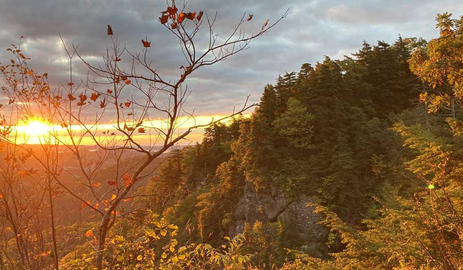

Fifth Newsletter
We are moving on to the final stage of the Octagon and making good progress on the other buildings, For the Octagon, we finished putting light straw clay insulation in every wall. This natural building technique is eco-friendly and cheap and involves mixing clay slip with straw and packing it in wall sections.
Full Newsletter

Fourth Newsletter
All of the students here agree that we are beyond blessed to be here to witness the transition of our surroundings to Fall. We have definetly been taking advantage of this season by taking sunrsie hikes, trips to local parks, back acking trips and more!
Full Newsletter
Third Newsletter
Our community was brought closer together as we celebrated the transition from summer to fall. We gathered around the fire, made pizza in our cob oven, and honored the fall equinox. We had a small ceremony to give thanks to nature and all it has provided to us...
Full Newsletter
A Closer Look
Have an in-depth look at select students' lives during this extraordinary semester. Read about their personal stories, what's challenging to them, and what they work on. What is it like to take a full course load off-grid, build your own cabin, and live in an intimate community? Mia can tell you more...
Have a closer look
Second Newsletter
We have broken ground on our living spaces this past week. As a reminder, the living spaces that we are planning on adding to the farm include: Octagon Cabin for 5 people, Crones Cottage accessible for older visitors who may be in a wheelchair, tiny House for a couple, school bus with a kitchen and two beds, treehouse, art studio...
Full Newsletter
Our First Newsletter
Hello adoring fans!
The entire Woodland Harvest Mountain Farm crew has safely made it to our new home and we are happy to announce that all of our travelers are officially COVID negative! As we settle into our experimental off grid bubble, we've...
Full Newsletter
Article on Olin's Newsletter
At first glance, it may seem that an ultra-rustic experience living off the land—harvesting crops, tending to livestock, chopping wood, harvesting vegetables, using “humanure” composting toilets—is the antithesis of the life of an engineering student. And in a way, that’s exactly the point...
Full Article